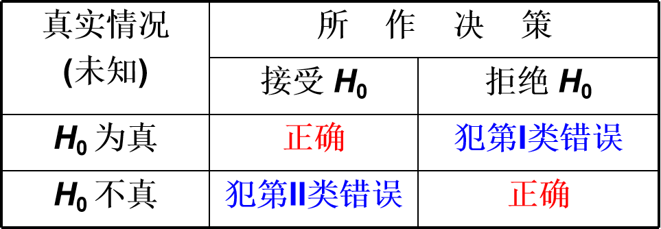
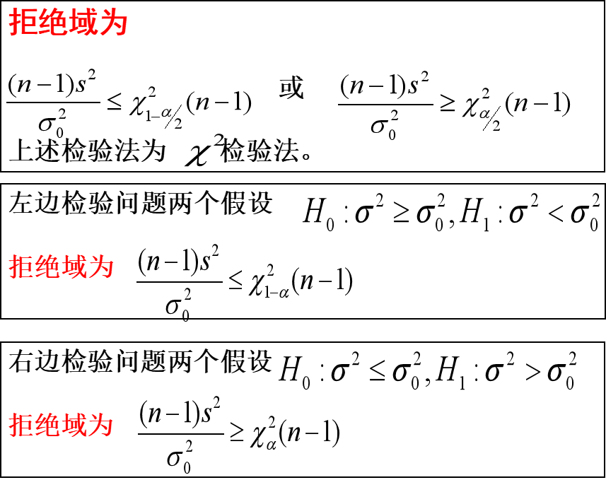

1 假设检验
1.1 基本原理
背景：在总体的分布函数完全未知或只知其形式、但不知其参数的情况下, 为了推断总体的某些性质，提出某些关于总体的假设。
例如, 提出总体服从泊松分布的假设；又如，对正态总体提出数学期望等于μ的假设等.
假设检验就是根据得到的样本对所提出的假设作出判断: 是接受, 还是拒绝.
例1：某车间用一台包装机包装葡萄糖, 包得的袋装糖重是一个随机变量, 它服从正态分布.当机器正常时, 其均值为0.5千克, 标准差为0.015千克.某日开工后为检验包装机是否正常, 随机地抽取它所包装的糖9袋, 称得净重为(千克)：0.497 0.506 0.518 0.524 0.498 0.511 0.520 0.515 0.512, 问机器这一天是否正常?
分析：用μ和σ分别表示这一天袋装糖总体X的均值和标准差，由长期实践可知，标准差较稳定，设σ=0.015，则X∼N(μ,0.0152)，其中μ未知。
目标：根据样本值判断μ=0.5还是μ=0.5。
（1）提出两个对立假设
- H0:μ=μ0=0.5
- H1:μ=μ0
说明：利用已知样本做出判断是接受假设H0，还是拒绝假设H1。
如果做出的判断是接受H0，则μ=μ0，即认为机器工作是正常的，否则认真是不正常的。
（2）找到μ的估计量Xˉ
Xˉ是μ的无偏估计量，若H0为真，则∣xˉ−μ0∣不应太大。
（3）构造检验统计量（分布已知）
Z=σ/nXˉ−μ0当H0为真时,U∼N(0,1).
（4）选定常数k判断假设是否正确
当观察值xˉ满足σ/n∣xˉ−μ0∣≥k时（感觉这个地方有点像置信区间），拒绝假设H0，分支接受假设H0。
1.1.1 如何确定常数k
因为当H0为真时，满足Z=σ/nXˉ−μ0∼N(0,1)，取标准正态分布分位点k=zα/2，当σ/n∣xˉ−μ0∣≥zα/2时，拒绝假设H0，反之接受H0。
1.2 假设检验的过程
在例1中选定α=0.05，则k=zα/2=z0.025=1.96，又已知n=9，σ=0.015，由样本计算得到xˉ=0.511，既有
σ/n∣xˉ−μ0∣=2.2>1.96
于是拒绝假设H0，认为包装机不正常。
以上所采取的检验法的合理性分析：
通常σ总是取得很小，如σ=0.01，σ=0.05，则：
P{∣σ/nXˉ−μ0∣≥zα/2}=α
即∣∣∣∣σ/nXˉ−μ0∣∣∣∣≥zα/2是一个小概率事件。如果在一次实验中，上述不等式成立，则有理由怀疑原来的假设H0的正确性，因而拒绝假设H0。
1.3 假设检验的相关概念
1.3.1 显著性水平
若∣z∣=∣∣∣∣σ/nxˉ−μ0∣∣∣∣≥k，则称xˉ与μ0的差异是显著的，则拒绝假设H0，反之接受H0。
其中k由α决定，α称为显著性水平。
1.3.2 检验统计量
统计量Z=σ/nXˉ−μ0称为检验统计量。
1.3.3 原假设与备择假设
假设检验问题通常叙述为：在显著性水平α下：
- 检验假设H0:μ=μ0
- H1:μ=μ0
其中H0称为原假设或零假设，H1称为备择假设。
1.3.4 拒绝域与临界点
当检验统计量取某个区域C中的值时, 我们拒绝原假设H0，则称区域C为拒绝域，拒绝域的边界点称为临界点。
如在例1中：
- 拒绝域为∣z∣≥zα/2
- 临界点为z=−zα/2和z=zα/2
1.3.5 两类错误及记号

第I类错误的概率记为：$P_{ 当 H_{0} 为真拒绝H_{0}} 或 P_{\mu \in H_{0}}\{拒绝H_{0}\}$
第II类错误的概率记为：$P_{ 当 H_{0} 不真接受H_{0}} 或 P_{\mu \in H_{1}}\{接受H_{0}\}$
1.3.6 显著性检验
只对犯第一类错误的概率加以控制，而不考虑犯第二类错误的概率的检验，称为显著性检验.
1.3.7 双边备择假设与双边假设检验
1.3.8 右边检验与左边检验
- 右边检验：形如H0:μ≤μ0，H1:μ>μ0的假设检验
- 左边检验：形如H0:μ≥μ0，H1:μ<μ0的假设检验
右边检验与左边检验统称为单边检验。
1.3.9 单边检验的拒绝域
右边检验的拒绝域为：
z=σ/nx−μ0≥zα
左边检验的拒绝域为：
z=σ/nx−μ0≤−zα
1.4 假设检验的一般步骤
- 根据实际问题的要求，提出原假设H0及备择假设H1
- 选择待检参数的估计量，确定检验统计量以及拒绝域的形式
- 求出拒绝域
- 根据样本观察值确定接受还是拒绝原假设
2 正态总体均值的假设检验（单个总体）
2.1 σ2已知，关于μ的检验（Z检验）
- 假设检验H0:μ=μ0，H1:μ=μ0
- 假设检验H0:μ≤μ0，H1:μ>μ0
- 假设检验H0:μ≥μ0，H1:μ<μ0
利用H0为真时服从N(0,1)分布的统计量：
Z=σ/nXˉ−μ0∼N(0,1)
来确定拒绝域，这种检验法称为Z 检验法。
例1：某切割机在正常工作时, 切割每段金属棒的平均长度为10.5cm, 标准差是0.15cm, 今从一批产品中随机的抽取15段进行测量, 其结果如下：

假定切割的长度服从正态分布，且标准差没有变化，试问该机工作是否正常？（α=0.05）
2.2 σ2未知，关于μ的检验（t检验）
当H0为真时，S/nXˉ−μ0∼t(n−1)，采用t=S/nXˉ−μ0来作为检验统计量的称为t检验。
取k=tα/2(n−1)，则
P{∣S/nXˉ−μ0∣≥ta/2(n−1)}=α
拒绝域为
∣t∣=∣∣∣∣∣s/nxˉ−μ0∣∣∣∣∣≥tα/2(n−1)
3 正态总体方差的假设检验（单个总体）
设总体X∼N(μ,σ2)，μ和σ2均未知，X1,X2,⋯,Xn是来自X的样本，给定显著性水平α，要求检验假设
H0:σ2=σ02,H1:σ2=σ02
其中，σ02为已知常数。

4 本章总结
- 假设检验的基本原理、相关概念(9个)和一般步骤(5 步)。
- 熟练进行单个正态总体的均值检验（包括方差已知（Z检验）和未知（t检验）两种情况。）
- 熟练进行单个正态总体的方差检验。

 微信
微信 支付宝
支付宝